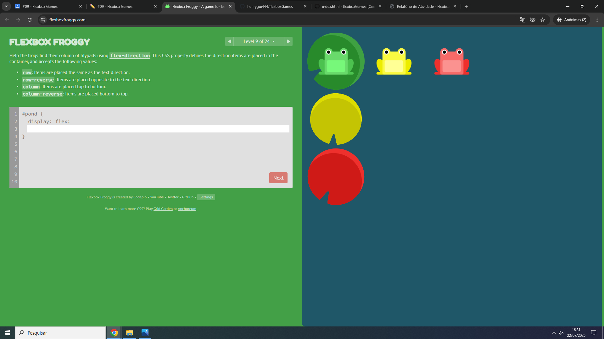
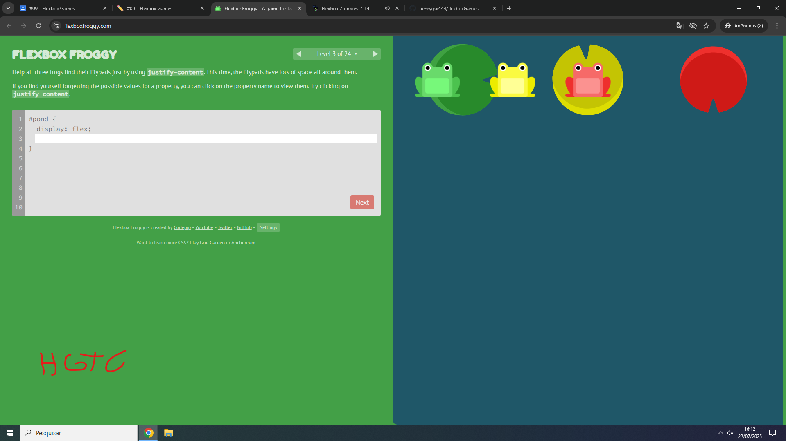
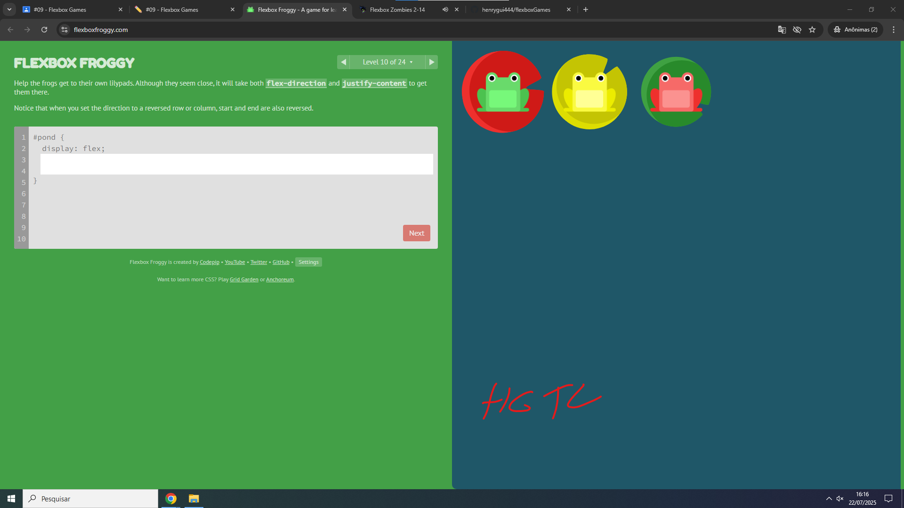
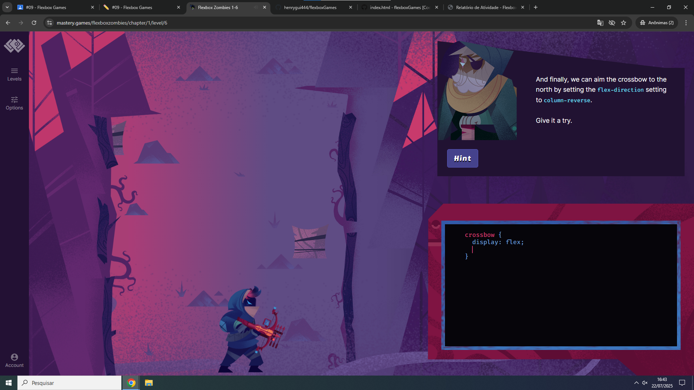
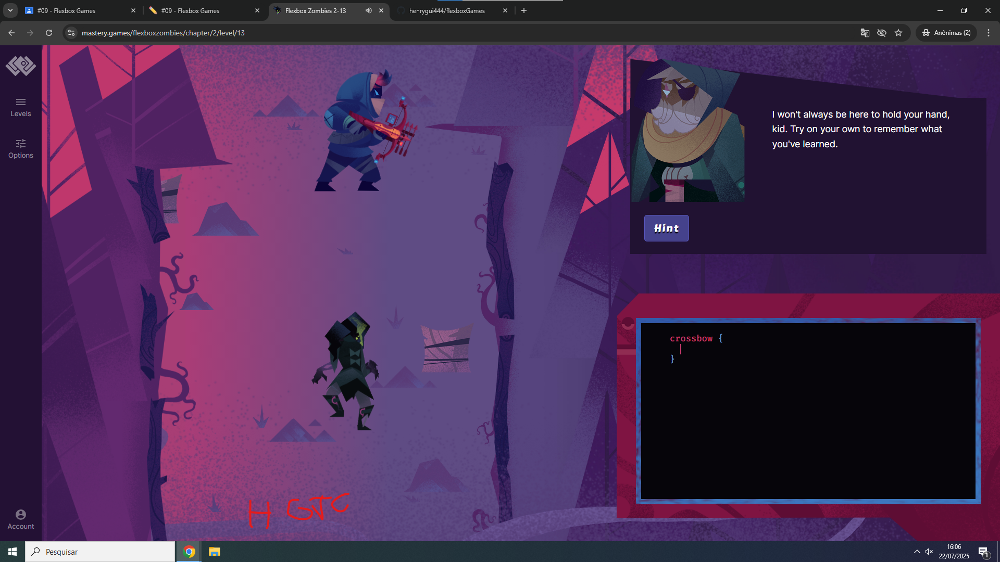
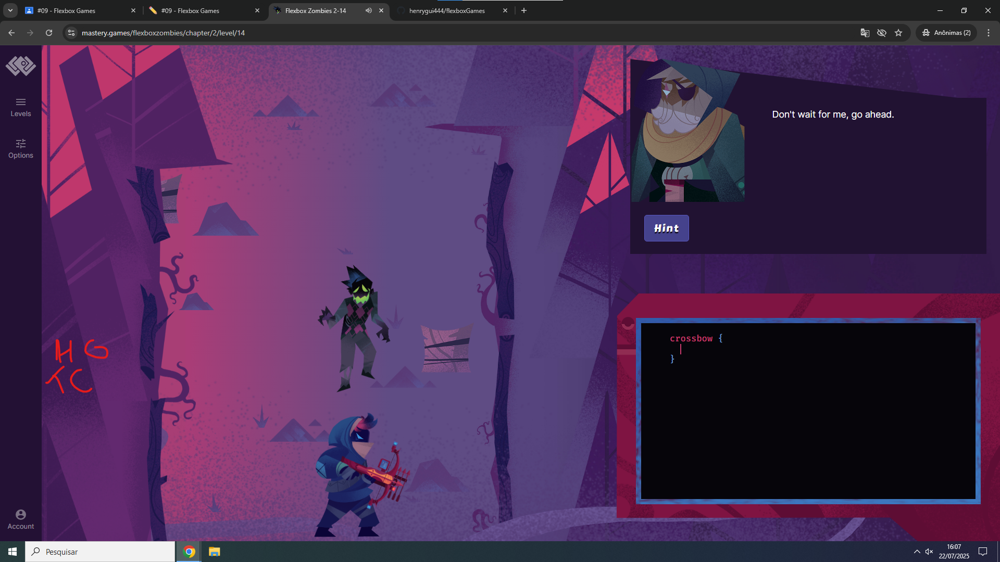

Nome: Henry Guilherme Teixeira Costa
Link: https://flexboxfroggy.com/
Escolhi este jogo por ser de sapos, colorido e apresentar um bom feedback visual das propriedades aplicadas.
Link: https://mastery.games/flexboxzombies/
Porque ele é de zumbis , a estética dele é muito bonita .
Nível Desafiador 1: Nível 3

Foi desafiador entender a combinação entre justify-content e align-around para posicionar corretamente os sapos.
Nível Desafiador 2: Nível 9

O mais dificil foi entender as palavras e o que cada função significa como flex-direction
Nível Desafiador 3: Nível 10

Esse nível exigiu compreender melhor o comportamento do flex-end em um eixo diferente.
Nível Desafiador 1: Nível 6 , capitulo 2

Aqui, entender o eixo principal vs. eixo transversal confundiu um pouco no início.
Nível Desafiador 2: Nível 13 , capitulo 2

Combinava várias propriedades novas, exigindo mais atenção e testes.
Nível Desafiador 3: Nível 14 , capitulo 2

Foi difícil ajustar a posição de todos os elementos corretamente usando order e justify-content juntos.
Em um site de portfólio, eu utilizaria Flexbox para criar um menu de navegação com itens espaçados igualmente usando justify-content: space-between, garantindo que se ajustem em qualquer largura de tela. Também aplicaria Flexbox em uma galeria de projetos, permitindo que os "cards" se reorganizem responsivamente e com espaçamento automático entre si.